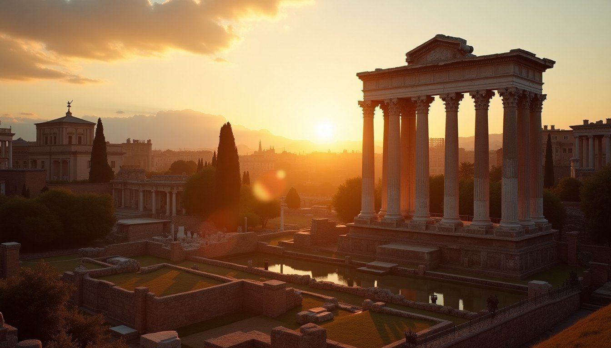
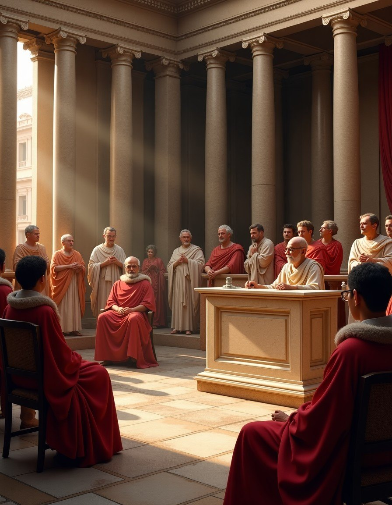
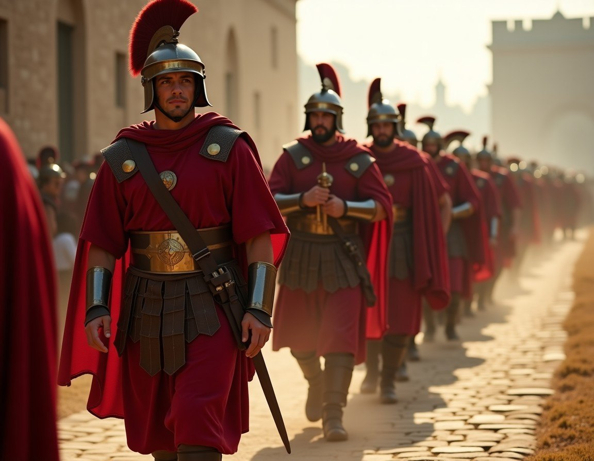
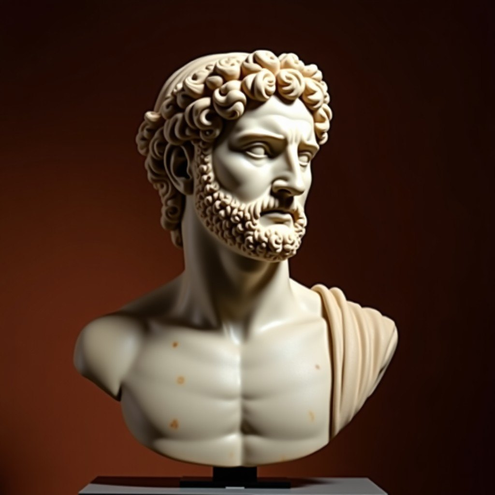
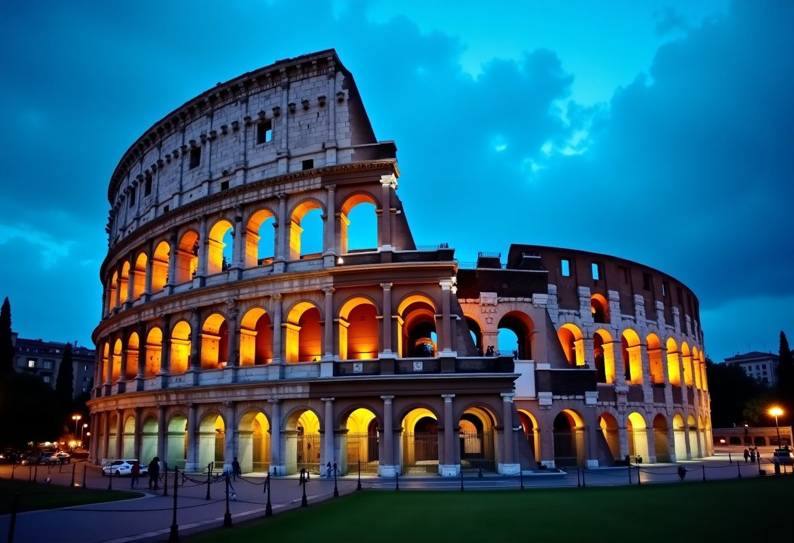

One thousand two hundred and twenty-nine years. Discover the journey from a mud-walled village on seven hills to the legendary empire that permanently shaped the destiny of the West.
Begin at the Beginning →753 – 509 BC · From mythic twins to Etruscan kings
Rome began not with grand marble architecture, but with a fratricide. According to legend, the twin brothers Romulus and Remus—sons of Mars—were abandoned to drown in the Tiber River, only to be saved by a she-wolf who nursed them. When they grew to manhood, they disagreed on where to locate their new city. Romulus killed Remus, drew the sacred boundary of the city on the Palatine Hill, and became Rome’s first king in 753 BC.
Over the next two and a half centuries, Rome was ruled by seven successive kings. These early monarchs transformed the small pastoral settlement into a regional power, draining the marshy valley that would become the Roman Forum and establishing the foundational structures of Roman religion, law, and defense.
The early Roman kingdom was heavily influenced by the sophisticated Etruscans to the north. However, the tyranny of the final Etruscan king, Tarquin the Proud, drove the Romans to action. In 509 BC, following a citizen revolt led by Lucius Junius Brutus, the monarchy was overthrown, and the citizens swore a solemn oath never to let a single man rule Rome again.
"So perish anyone else who shall leap over my walls." — Romulus, upon slaying Remus
From engineering secrets (the arch) to administrative symbols (the fasces), Etruscan rule gave Rome the physical and political tools to conquer its surrounding neighbors.
509 – 27 BC · The experiment of collective governance and the rise of a Mediterranean powerhouse

In place of a king, the Romans designed a radically balanced government. Power was shared between the Senate (composed of patrician elders) and two yearly elected consuls who held executive command. Under this system of shared ambition, Rome expanded rapidly.
But growth brought external existential threats. The Punic Wars against Carthage pushed Rome to the brink, most famously when Hannibal crossed the snowy Alps with war elephants to ravage the Italian heartland. Emerging victorious, Rome claimed total hegemony over the Mediterranean.
Yet, the Republic's greatest enemy lay within. Massive wealth inequality and ambitious military commanders eventually paralyzed the system. In 49 BC, Julius Caesar defied the Senate, crossed the Rubicon River with his legion, and triggered a devastating civil war. Though Caesar declared himself dictator for life, his reign was abruptly cut short on the Ides of March, 44 BC, by conspirators seeking to save the Republic—only to plunge it into final, fatal chaos.
The Model Citizen
Granted absolute dictatorial power to save a besieged Roman army, he defeated the enemy in fifteen days, promptly resigned his command, and returned to his small farm.
The Conqueror of Hannibal
A visionary military tactician who took the fight directly to Carthage, defeating Hannibal Barca at the Battle of Zama in 202 BC and securing Rome’s dominance.
The Voice of the Senate
Rome’s legendary orator and statesman who passionately defended republican liberty against populist demagogues and military dictators through the power of speech.
The highly disciplined force that engineered, constructed, and guarded an empire stretching from Britain to the sands of Mesopotamia.
The Roman soldier was not just a warrior, but an engineer, builder, and administrator. Armed with the gladius and protected by modular lorica segmentata, legions marched along perfectly paved military roads to secure remote frontiers, build fortified outposts, and project the terrifying majesty of Rome to the edge of the known world.

27 BC – AD 476 · An age of emperors, soaring monuments, and monumental transformation
Out of the ashes of civil war emerged Caesar's adopted son, Octavian. In 27 BC, he took the name Augustus, establishing the Principate. While maintaining the illusion of a Republic, Augustus took supreme control as the first Roman Emperor, inaugurating the Pax Romana—two centuries of unprecedented peace and cultural prosperity.
During this golden age, the "Five Good Emperors" brought the empire to its absolute zenith. Rome’s architectural ingenuity exploded, giving rise to marvels like the colossal Flavian Amphitheatre (the Colosseum) and the vast dome of the Pantheon. Wealth and trade flowed across continents safely under Roman law.
But peace was not eternal. Under spiritual and military pressure, the old order shifted. Emperor Constantine embraced Christianity, relocating the capital to the thriving Greek city of Byzantium (re-named Constantinople). In AD 395, the immense weight of administrative borders forced the official split of the empire into the Western and Eastern halves.


27 BC – AD 14
Laid the imperial foundation, stabilized borders, and organized a sprawling professional administration.
AD 98 – 117
The soldier-emperor who expanded the boundaries of Rome to their absolute territorial limits.
AD 161 – 180
The Stoic philosopher who defended the northern border while authoring his timeless book "Meditations."
AD 306 – 337
Legalized Christianity, built a majestic eastern capital, and fundamentally reshaped European culture.
AD 410 – 476 (and its echo) · The gradual fracturing of an empire and its continuous legacy
The fall of Rome was not a singular catastrophic day, but a long, complex process of decay and external pressure. Over decades, economic instability, internal political corruption, plaque, inflation, and relentless pressure from migrating Germanic tribes weakened the Western Roman Empire. The psychological blow came in AD 410, when Alaric, King of the Visigoths, breached Rome's city walls and sacked the historic capital for the first time in eight centuries.
The symbolic end came quickly thereafter. In AD 476, the Germanic chieftain Odoacer deposed the teenage western emperor, Romulus Augustulus, sending the imperial insignia back to Constantinople. The Western Empire was no more, transitioning into fragmented tribal kingdoms.
Yet, while Rome fell in the West, the flame was never fully extinguished. The Eastern Roman Empire—which we today call Byzantium—endured from its fortress city of Constantinople. For another thousand years, Byzantine emperors preserved Roman law, administrative records, and advanced architecture, surviving until the city finally fell to the Ottoman Empire in 1453.
"My city is fallen and yet I live." — Constantine XI, Last Emperor of Byzantium (1453)
The modern world is built upon ancient ruins. Explore the systems, concepts, and structures we inherit directly from Rome.
The foundational concepts of trial by jury, written legal codes, and "innocent until proven guilty" stem directly from Roman civil jurisprudence (Corpus Juris Civilis).
Latin remains the mother of the Romance languages (Italian, French, Spanish, Portuguese, Romanian) and continues to form the vocabulary of modern science, medicine, and law.
Their masterful networks of straight, paved roads, colossal stone bridges, and gravity-powered aqueducts stood strong through millennia of regular wear.
Our division of the year into twelve months, including July (for Julius Caesar) and August (for Augustus), comes directly from the ancient Julian calendar reform.
Modern representative democracies utilize bicameral houses, supreme courts, and veto systems inspired directly by the checks and balances of the Roman Republic.
Invented by Rome, volcanic pozzolana concrete allowed for massive architectural spans, colossal arches, and domes that survived centuries submerged in seawater.
Romulus marks the boundary of the Palatine Hill, building the first settlement of Rome.
The tyrannical king Tarquin the Proud is deposed; Rome establishes the consulship.
Carthage launches its massive surprise invasion of Italy during the Second Punic War.
Julius Caesar defies the Senate and crosses into Italy, initiating civil war.
Julius Caesar is assassinated in the Senate theater by Brutus, Cassius, and conspirators.
Octavian accepts the sacred title of Augustus, establishing the Roman Empire.
Emperor Titus inaugurates the Flavian Amphitheatre with 100 days of grand games.
Emperor Constantine legalizes Christian worship, shifting the empire's religious landscape.
Romulus Augustulus is deposed, bringing an end to ancient Roman power in Western Europe.
The Eastern Roman Empire officially falls when Constantinople is taken by Sultan Mehmed II.